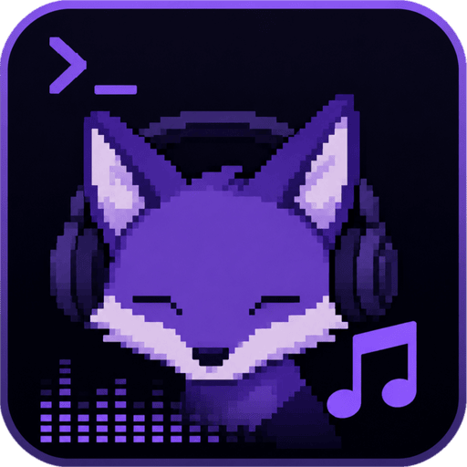

多音源聚合
跨音源搜索、失败换源、歌手 / 专辑、歌单、分类与排行榜。

voicefoxVoiceFox 是一个键盘优先的终端音乐播放器：聚合多音源、歌词、本地音乐、下载、收藏、历史与歌单，让完整的音乐工作流留在你的 TUI 里。
稳定的 TUI 发布线持续打磨，同时保留 Flutter + Rust 的新架构实验线。
跨音源搜索、失败换源、歌手 / 专辑、歌单、分类与排行榜。
ReplayGain、EQ、A-B 循环、淡入淡出与键盘 / 鼠标队列管理。
LRC / KRC / QRC / YRC，支持翻译、罗马音与全屏歌词。
扫描、标签、封面、歌词、CUE 分轨与文件诊断。
并发分片、完整性校验，以及标签、封面、LRC 写入。
Linux D-Bus / MPRIS、Windows SMTC 媒体键与桌面通知，以及 Kitty / Sixel / iTerm2 封面。
从系统音频频谱到睡眠定时器，再到跨端歌单推送与只读镜像缓存。
按 w 在内容区叠加 cava 风格的柱状频谱，采集系统输出监视流；采集断流会自动重连，不再冻结在最后一帧。
按 t 选择 15–120 分钟，到点在最长 10 秒内淡出并暂停；启用后底栏显示倒计时。
硬件媒体键、系统媒体浮层与蓝牙耳机按键可控制播放，浮层同步显示封面与歌名。
导入 M3U / M3U8 / LX / 网易云 JSON、导出 M3U8，并把自建歌单或收藏追加推送到网易云。
设置页一键清除封面缓存与网易云歌单镜像，值列显示当前体积，清理后按需重建。
拖拽表头列宽不再误触发换列；频谱叠加层不再继承底层 DIM/BOLD，柱子干净不闪。
搜索、播放、下载和本地管理保持同一套交互。
跨音源检索，结果不理想时直接切换来源。
播放、收藏、歌手 / 专辑详情保持键盘路径。
并发下载并写入标签、封面与歌词。
扫描、CUE 分轨、筛选、排序和诊断。
同时支持 lx-music 兼容的 JS 自定义音源，音源优先级可配置。
把播放器、音源、歌词、下载和本地库拆成清晰模块，同时为跨平台 GUI 保留 FFI 边界。
ratatui 负责界面，libmpv 负责播放；核心能力通过 Rust workspace 组织。
Flutter 前端实验线通过 flutter_rust_bridge 连接 Rust 能力，为桌面与移动端演进预留空间。
完整键位见 KEYBINDINGS.md，全部可自定义。
每个平台一个 zip；Windows 包内已带 libmpv。
git clone https://github.com/emoeem/voicefox.git
cd voicefox
cargo build --release -p voicefox-app --bin voicefox从源码构建需要 libmpv 开发包（Debian/Ubuntu：libmpv-dev，Arch：mpv；macOS：brew install mpv）。频谱可视化在 Linux 需要 pw-record 或 parec。
酷我、酷狗、QQ、网易云、咪咕、哔哩哔哩、千千、JOOX、5sing、Jamendo、Apple Music、汽水与本地音乐；同时支持 lx-music 兼容的 JS 自定义音源，可在设置里调整优先级。
播放依赖 libmpv。Linux 用发行版的 libmpv 包，macOS 用 brew install mpv，Windows 直接下载 Releases 里已打包 libmpv 的版本。频谱可视化在 Linux 额外需要 pw-record（PipeWire）或 parec（pulseaudio-utils）。
按 w 即可，状态会写入 [ui] visualizer；也可以设 visualizer = "bars" 默认开启。画的是系统输出监视流，所以 voicefox 自己不出声时柱子是平的。
封面协议支持 Kitty / Sixel / iTerm2，识别不出时回退 Unicode 半格。可在 [ui] cover_protocol 里显式指定，避免自动探测误判。
配置与会话使用平台配置目录，缓存使用缓存目录。提供 --export-data / --import-data 做整库备份与迁移，导入时会先自动备份原数据。
MIT License，源码在 GitHub：emoeem/voicefox。